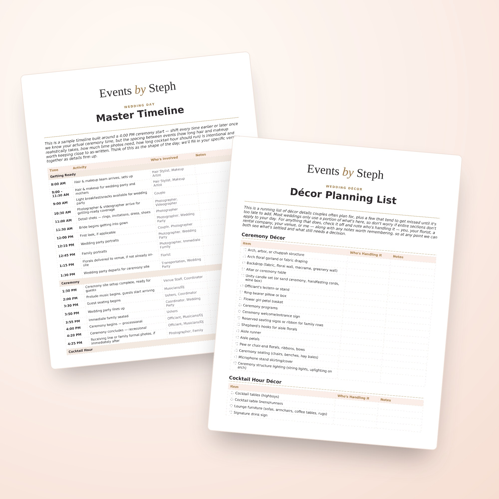

Your Right Hand
More than a day-of presence.
Think of me as your right-hand woman through the whole planning process, not just on your wedding day. Once you book me, you've got unlimited access for questions, second opinions, or just someone to talk a decision through with. I'll also review your wedding details along the way, so nothing slips through the cracks.

What I'm Here For
Whether you're planning an intimate elopement, a backyard celebration, or have booked a venue, I've got you covered. Every wedding is unique, but here's the shape of it, start to finish.
In the months before
- Introductory planning meeting to review all wedding details
- Review vendor contracts and confirm what has been booked
- Create a detailed wedding day timeline
- Discuss family dynamics and any special requests
- Unlimited availability for all your wedding questions
- Reviewing your planning documents, décor lists, and seating charts to catch anything important you might be missing
- Being a sounding board for the bigger decisions, so you're not figuring it all out alone
- Checking in regularly, so nothing quietly falls behind schedule
In the weeks before
- Confirm every vendor's arrival time, contact info, and final details
- Build your full minute-by-minute timeline and share it with your vendors
- Do a final review of your plans to catch anything that still needs attention
- Walk the ceremony and reception space with you to finalize the layout
- Run the rehearsal, so everyone knows where to stand and when to walk
On your wedding day
- Up to 10 hours of day-of coordination
- Arrive early to oversee setup and walk the space before guests arrive
- Greet and check in every vendor as they arrive
- Ensure ceremony decor and reception details are set up as planned
- Handle any unexpected issues behind the scenes
- Be the one point of contact for questions from vendors, guests, and family, so they don't come to you
- Cue the ceremony: lining up the wedding party, signaling the processional, directing the flow
- Keep the timeline on track in real time, adjusting as things naturally shift
- Oversee the reception flow: toasts, first dance, cake cutting, all cued at the right moment
- Make sure the couple has time to eat, hydrate, and enjoy the celebration
- Show up with a day-of emergency kit so the small things never become big ones
Included With Booking
Your Wedding Day Planner
Beyond day-of coordination, every couple I work with gets access to a growing set of planning materials we build together throughout your engagement: a shared, organized home for every detail of your wedding, so nothing gets forgotten between now and your big day.

Décor Planning List
Every décor detail worth considering, from ceremony florals to send-off sparklers, with space to note what's decided, what's still open, and who's handling it.
Vendor Tracker
Every vendor's contact info, contract status, deposit, and balance due in one place, so nothing about payments or confirmations is ever a guessing game.
Day-of Task List
Every task your wedding day actually needs, organized by phase and assigned to whoever's handling it, so responsibility is always clear.
Wedding Day Timeline
A realistic, minute-by-minute shape for your day, built from real weddings I've run, that we fine-tune together as plans firm up.
Each one starts pre-loaded with the details couples often don't think to plan for, so we're never starting from a blank page — just another way to make sure nothing slips through the cracks.
Investment
Starting at $1,800.
Planning a wedding comes with a lot of decisions, and I believe knowing what to expect makes the process a little easier.
For my 2026 and 2027 couples, full day-of coordination is $1,800. Weddings located more than an hour away include a $250 travel fee.
Every wedding is unique, and the support you need may look a little different depending on your plans. My full day-of coordination package is designed to give you the peace of mind of having someone by your side through the final details and wedding day.
Planning a smaller celebration or looking for help with a specific part of the process? Partial coordination starts at $1,000. Reach out and tell me about your plans, and we'll talk through what kind of support would be the best fit.
FAQ
Common questions.
Do you work with small weddings/elopements?
Yes! I offer a scaled-down package for elopements and micro weddings to match a shorter timeline and a smaller guest list. Reach out and tell me about your day, and we'll figure out the right fit together.
What if our wedding runs longer than the day-of package covers?
My day-of package covers up to 10 hours of coordination. If your day runs longer than that, additional time is billed at $250/hour.
Do you coordinate rehearsal too, or just the wedding day?
I'm happy to be there for your rehearsal to walk through the ceremony flow with your wedding party, in addition to full coverage on the wedding day itself.
What if we're having a destination wedding or one more than an hour away?
I love a good destination wedding! Weddings located more than an hour from Georgetown, MA include a $250 travel fee to cover the extra distance.
Do you help with vendor selection, or do we need to have vendors already booked?
If you already have vendors booked, I'll connect with them ahead of your day to make sure everyone's aligned. If you're still deciding, I'm happy to share recommendations from vendors I've personally worked with and trust, but you'll be the one to book and finalize the details with them directly.
What if we already have a day-of coordinator through our venue?
Many venues offer a venue coordinator, but their job is to look out for the venue, not for you. I work exclusively for you and your vision, managing your vendors, your timeline, and the details that a venue coordinator typically won't cover.
Do you offer partial coordination if we just need help with specific parts?
Yes. Every wedding is different, and not everyone needs the same level of support. Reach out and tell me what you're looking for, and we can talk through what kind of help makes the most sense for your day.